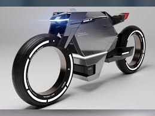

Here you can see my first website
An Act to provide for the protection and improvement of environment and for matters connected there with: WHEREAS the decisions were taken at the United Nations Conference on the Human Environment held at Stockholm in June, 1972, in which India participated, to take appropriate steps for the protection and improvement of human environment; AND WHEREAS it is considered necessary further to implement the decisions aforesaid in so far as they relate to the protection and improvement of environment and the prevention of hazards to human beings, other living creatures, plants and property; BE it enacted by Parliament in the Thirty-seventh Year of the Republic of India as follows:-
Reduce, reuse, and recycle. Cut down on what you throw away. Follow the three "R's" to conserve natural resources and landfill space. Volunteer. Volunteer for cleanups in your community. You can get involved in protecting your watershed, too. Educate. When you further your own education, you can help others understand the importance and value of our natural resources. Conserve water. The less water you use, the less runoff and wastewater that eventually end up in the ocean. Choose sustainable. Learn how to make smart seafood choices at www.fishwatch.gov. Shop wisely. Buy less plastic and bring a reusable shopping bag. Use long-lasting light bulbs. Energy efficient light bulbs reduce greenhouse gas emissions. Also flip the light switch off when you leave the room! Plant a tree. Trees provide food and oxygen. They help save energy, clean the air, and help combat climate change. Don't send chemicals into our waterways. Choose non-toxic chemicals in the home and office. Bike more. Drive less.
